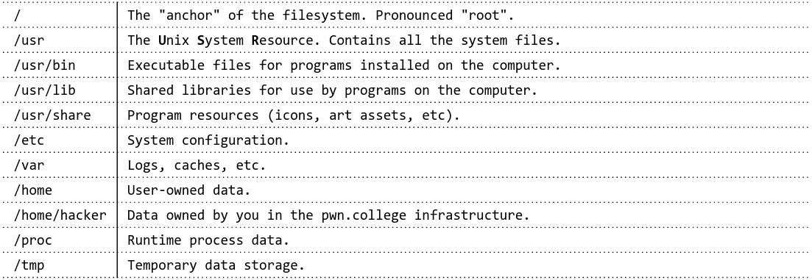

As a part of my degree program, I have to take a class called CSE466: Computer Systems Security. The professor for this class (Dr. Shoshitaishvili) created pwn.college, a free education platform to guide not only students in the course, but anyone who wants to try it out. I will be publishing all of my notes from each relevant module of course here, though I highly recommend watching the lectures for yourself as they go much more in-depth!
Table of Contents:
Linux Command Line:
File System:

- Absolute Paths: start with
/ - Relative Paths: do NOT start with
/, relative to the current working directory
Environment Variables:
Environment Variables: a set of Key/Value pairs passed into every process when launched. Critical variables include:
PATH: list of directories to search for programs inPWD: current working directoryHOME: path to home directoryHOSTNAME: name of the system
Files:
- Symbolic Links (Soft Links): special type of file that references another file
- symbolic links to relative paths are relative to the directory containing the link
- Hard Links: a perfect reference to the data/content inside the linked file. They link only to the data of the linked file, not its original path
Different Types of Files:
-: regular filed: a directory (yes, directories are actually just special files!)l: a symbolic link (a file that transparently points to another file or directory)p: is a named pipe (also known as a FIFO)c: is a character device file (i.e., backed by a hardware device that produces or receives data streams, such as a microphone)b: a block device file (i.e., backed by a hardware device that stores and loads blocks of data, such as a hard drive)s: a unix socket (essentially a local network connection encapsulated in a file)
Pipes:
- Unnamed Pipes (
|): ethereal channels of communication, often used to direct data from one command to another - Named Pipes (FIFOs): used to help facilitate data flow in certain situations. The flow of data is First In First Out (FIFO)
Useful Commands (CLI):
witch programName: will return the absolute path of the program given found by thePATHvariableenv: prints all the environment variables to the screenexport variable=value: can set new/existing variables to a new valueln -s fileToBeLinked symbolicLinkName: creates a symbolic linkln fileToBeLinked hardLinkName: creates a hard linkls -ld: Lists all files in current directory along with the files’ absolute pathmkfifo fifoName: makes a new FIFOcommand < in_file: redirect in_file into command’s inputcommand > out_file: redirect command’s output into out_file, overwriting itcommand >>out_file: redirect the command’s output into out_file, appending to itcommand 2>error_file: redirect the command’s errors into error_file, overwriting itcommand 2>>error_file: redirect the command’s errors into error_file, appending to it
Binary Files
ELF Files:
Executable and Linkable Format (ELF): defines a program as it will be loaded and executed in memory for Linux/BSD systems. Allows for a compiler to create and define a program
- is a binary file format containing the program, its data, how the program should be loaded (program/segment headers), and the metadata describing program components (section headers)
- For Windows the equivalent are Portable Executables (PE)
- For MacOS the equivalent are Mach-O
Dynamically Linked ELF: The ELF file relies on libraries that also need to be loaded
ELF Program Headers:
Program Headers: specify information and define segments needed to prepare the program for execution. The source of information used when loading a file
- Segments: parts of an ELF file that are loaded into the memory of a computer when that file is executed
Important Entry Types:
INTERP: entry type defining the library that should be used to load this ELF into memoryLOAD: entry type defining a part of the file that should be loaded into memory
ELF Section Headers:
Section Headers: represent a different view inside an ELF file with a lot more semantic information that is less important for the actual loading process
- They are not required in an ELF file, they are stored as metadata
Important Sections:
.text: the executable code of your program..pltand.got: used to resolve and dispatch library calls..data: used for pre-initialized global writable data (such as global arrays with initial values).rodata: used for global read-only data (such as string constants).bss: used for uninitialized global writable data (such as global arrays without initial values)
Symbols:
Symbols: binaries and libraries that use dynamically loaded libraries to find libraries, resolve function calls into those libraries, etc

Resources to Interact with ELF:
gcc: to make your ELF.readelf: to parse the ELF header.objdump: to parse the ELF header and disassemble the source code.nm: to view your ELF’s symbols.patchelf: to change some ELF properties.objcopy: to swap out ELF sections.strip: to remove otherwise-helpful information (such as symbols).- kaitai struct: to look through your ELF interactively.
Useful Commands (Binary):
readelf -a programName: will parse out the ELF file, providing information such as headersnm -a programName: will list out all of the symbols associated with a programnm -D programName: will list out all of the dynamic imports used at runtime
Lifecycle of a Linux Process
What is a Process:
Every Linux process has:
- State
- running, waiting, stopped, zombie
- Priority (and other scheduling information)
- Parent, Siblings, Children
- Shared Resources
- files, pipes, sockets
- Virtual Memory Space
- Security Context
- effective uid and gid
- saved uid and gid
- capabilities
Virtual Memory: memory dedicated to a specific process
Physical Memory: memory shared among the whole system
libc: a library full of helper functions that is used by almost every program (including common C functions)
Process Timeline:
- Process is created
- Kernel will check for executable permissions
- Calls
execve()to begin loading
- Process is loaded
- Figures out what steps need to be taken to load the file
- Starts from the beginning of the file, looks for
#!(sh-bang) to extract the rest of the line (the interpreter)- Will see if the interpreter matches one in the system, and will instead run your file as an argument to the interpreter from
#!
- Will see if the interpreter matches one in the system, and will instead run your file as an argument to the interpreter from
- If there is no
#!(not a script) then it will check if the file matches a format in/proc/sys/binfmt_misc- If a match is found, then it will execute the interpreter for that format with your file as an argument
- If it is a dynamically-linked ELF file, the kernel will read the interpreter/loader (collectively loader) defined in the ELF file
- The interpreter will be loaded and will be given control
- The interpreter then locates the libraries
LD_PRELOAD: environment variable, and anything in /etc/ld.so.preloadLD_LIBRARY_PATH: environment variable (can be set in the shell)DT_RUNPATHorDT_RPATH: specified in the binary file (both can be modified with patchelf)- /etc/ld.so.conf: system-wide configuration
- /lib and /usr/lib
- The interpreter then runs the libraries
- May cause more libraries to load if libraries depend on other libraries
- Will also update relocations during this process
- If it is a static ELF file, the kernel will just load the file
- Starts from the beginning of the file, looks for
- All of this information will be loaded to its own virtual memory space containing (located in /proc/self/maps):
- the binary
- the libraries
- the “heap”
- for dynamically allocated memory
- the “stack”
- for function local variables
- any memory specifically mapped by the program
- some helper regions
- kernel code in the “upper half” of memory is inaccessible to the process
- above 0x8000000000000000 on 64-bit architectures
- Process is initialized
- Will run any constructors specified in the ELF file
- Process is launched
- The ELF file automatically calls
_libc_start_main()from the libc library, which then calls the program’smain()function - Now the code is running
- The ELF file automatically calls
- Process reads its arguments and environment
- The
int main(int argc, void **argv, void **envp);function will take in three arguments:argc: the loaded objects (binaries and libraries)argv: command-line arguments in argvenvp: environment variables
- Process executes
- To interact with the operating system(OS), the process will use system calls
- For the OS to communicate with the process, signals are used
- Signals will pause process execution and invoke the handler (functions that take in the signal number)
- If the signal has no handler, the default action is to kill the process
- Signals will pause process execution and invoke the handler (functions that take in the signal number)
- Another method of outside interaction is by sharing memory with other processes
- This requires an initial system call, but then is self sustaining
- One way is to use a shared memory-mapped file in /dev/shm
- Process terminates
- Only two ways a process can terminate:
- Receive an unhandled signal
- Calling the
exit()system call
- After termination, processes must be “reaped”
- A process will remain in a zombie state and take up memory until the
wait()function is called by their parent - This will return the process’s exit code to the parent and then the process will be freed
- If this does not happen, the process is re-parented to PID 1 and will remain there until cleaned up
- A process will remain in a zombie state and take up memory until the
Useful Commands (Viewing Processes):
readelf -a fileName | grep interpret: will return the specific loader being used to load the filepatchelf --set-interpreter /some/interpreter ./fileName: will forcibly set the interpreter for a provided fileldd ./fileName: will list the libraries necessary for the file to run, including the interpreterstrace ./executable uncompiledFile: will “trace” out all of the system calls from when the process is first created to when its terminated./executable /proc/self/maps: will show the virtual memory storage layout for the executableman 2 open: documentation for all the different system callsdu -sb programFile: will output how many bytes a file is


Please share using the links if you enjoyed!